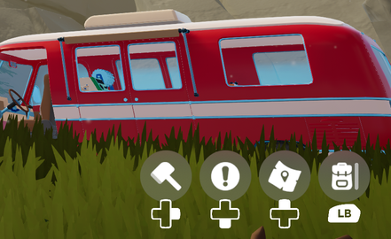
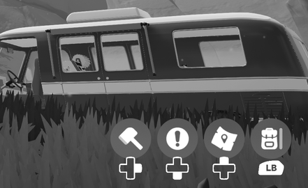
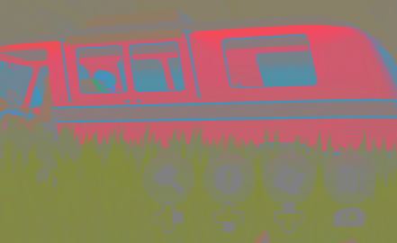
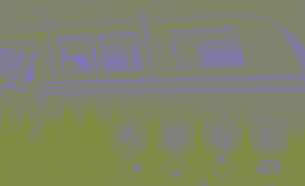
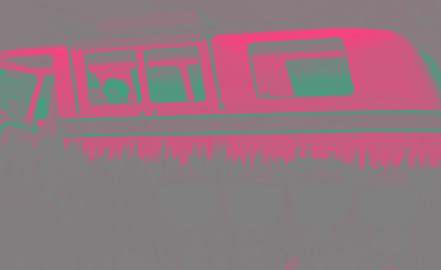
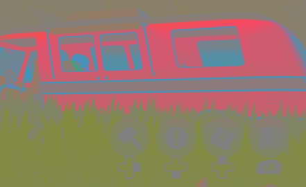
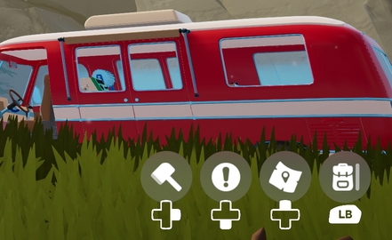
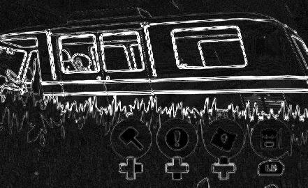

Screenshot Compression Lab
A 4K game screenshot is a 7.5 MB PNG. The copy posted to a forum is 128 KB and looks fine. This is where the other 98% went, how to see what was lost, and how the settings were chosen.
Where 7 MB goes
James runs a small self-hosted image host for posting screenshots to forums that don't host images themselves. Uploads keep the untouched original and get a compressed copy for posting. The test image throughout is one screenshot from Outbound, a cosy camper-van game by Square Glade Games: a fire lookout tower on a rocky hillside, a red van, a big blue sky, a compass along the top and the usual on-screen icons.
| Step | Size | Smaller by |
|---|---|---|
| Raw pixels, 3840 × 2160 × 3 bytes | 24.9 MB | – |
| The screenshot as a PNG, lossless | 7.49 MB | 3.3× |
| Resized to 1920 × 1080, still lossless | 1.90 MB | 3.9× |
| Lossy WebP, quality 82, sharp YUV | 128 KB | 14.5× |
A PNG has to reproduce every pixel exactly, and grass, rock and fine texture look almost like noise to it, so a lossless screenshot stays big. Halving the width and height is a plain factor of four. The big step is the last one, where the encoder is allowed to throw information away. Everything below is about that step: what it throws away, where, and how much is too much.
How lossy compression spends the budget
JPEG, WebP and AVIF all start the same way, and it's the step that explains most of what follows. These figures use the bottom-right corner of the screenshot, zoomed so single pixels are visible. Press and hold any figure marked "hold" to swap in the thing it's compared against.
1. Split brightness from colour
The image is converted from red, green and blue into one brightness channel and two colour channels. Your eyes resolve fine detail in brightness far better than in colour, and the split shows why that matters: nearly all the detail lives in brightness.





2. Halve the colour
Next, the colour channels are stored at half the width and half the height: one colour value for every square of four pixels. That discards three-quarters of the colour data before anything clever has happened. This is 4:2:0 chroma subsampling, the default for standard JPEG, for lossy WebP (where it's the only option) and for AVIF unless you ask otherwise.
The notation is a fossil. It comes from the 1982 studio standard for digital video, BT.601, where brightness was sampled at 13.5 MHz, four times a base rate of 3.375 MHz, so the "4" meant four times the base, and "4:2:2" meant colour at half that rate across each line. "4:2:0" kept the notation for colour halved both across and down, although the "0" was never literally zero.

3. Put it back together, and see what's missing
On display, the half-size colour is stretched back up and recombined with the full brightness. Most of the image looks identical. The difference map shows exactly where it isn't: only where colour changes sharply. That's the van's outline, the thin blue trim against red, and grass tips against the paintwork. Flat areas and brightness-only detail, such as the white icons on grey, come through untouched.


4. Blocks, predictions and rounding
Only then does compression proper begin. The encoder cuts the image into blocks and predicts each block from its already-encoded neighbours: "same as the row above", "continue this gradient". Only the difference between prediction and reality is kept. That difference is turned into frequencies, from broad shading to fine detail, and then rounded. The quality setting is the size of that rounding step, and fine detail goes first. The result is packed with an arithmetic coder, and block edges are smoothed on decode.
This is why a stylised game compresses so well. The sky is a smooth gradient that prediction gets almost exactly right, so it costs next to nothing. The budget goes to the grass. A photo-realistic game, or anything with film grain, wouldn't shrink nearly as far.
Measuring what you can see
Choosing settings needs a number for "how much worse does this look". The classic metric, SSIM, turned out to be badly misleading when comparing different formats:
| Setting | Size | SSIM | SSIMULACRA 2 |
|---|---|---|---|
| JPEG quality 82 | 198.9 KB | 0.920 | 72.4 |
| WebP quality 82 | 119.9 KB | 0.937 | 70.2 |
| AVIF quality 60 | 96.8 KB | 0.963 | 72.4 |
| JPEG XL distance 1.0 | 214.8 KB | 0.922 | 86.8 |
SSIM puts AVIF far ahead of everything and JPEG XL at "visually lossless" barely above JPEG. SSIMULACRA 2, a perceptual metric designed for comparing image codecs, says JPEG XL is well ahead and the other three are within a couple of points of each other. A colour-handling bug in the decoding was the first suspect; checking the average colours ruled it out. The formats are simply tuned against different models of human vision, and SSIM happens to reward some of those choices and punish others. SSIMULACRA 2's results matched what the eye sees in the comparison below, so every score on this page uses it. Its scale: 100 is identical, 90 visually lossless, 70 high quality (hard to spot artifacts without the original beside it), 50 medium.
One caution: SSIMULACRA 2 was developed by people who also built JPEG XL. That doesn't make it wrong, but for JPEG XL in particular, trust your own eyes in the viewer over the number.
The colour ceiling
Step 2 turns out to cap everything after it. Applying only the colour halving, with no compression at all, scores 79.9 on this screenshot. So standard JPEG, lossy WebP and default AVIF can never score much above 80, however high the quality is set. JPEG at quality 100 with halved colour scores 80.1 at 918 KB, right against that wall. With full-resolution colour ("4:4:4") the ceiling is 92.1. Even converting to brightness-plus-colour and back costs a little through 8-bit rounding, and JPEG 100 with full colour lands on exactly that number.
That's why the full-colour settings look so efficient. Spending bytes on colour resolution beats spending them on quality, because more quality refines what's left but can't restore colour discarded before compression started:
| Setting | Size | Score |
|---|---|---|
| JPEG quality 90, halved colour | 282.8 KB | 77.3 |
| JPEG quality 82, full colour | 259.7 KB | 79.7 |
| AVIF quality 70, halved colour | 128.8 KB | 75.3 |
| AVIF quality 60, full colour | 112.4 KB | 76.9 |
Full colour cost JPEG 31% more bytes but AVIF only 16%. AV1, the video codec AVIF is built on, predicts colour from the brightness at the same spot. Colour edges usually line up with brightness edges, so full colour comes nearly free. The ceiling matters most for game graphics: halving colour was designed for photographs and television, where colour changes slowly. Games are full of sharp colour edges, such as a red van against green grass or bright gauge rings on grey.
JPEG XL's lead is partly the same story. It never halves colour; it works in a colour space modelled on the eye's cone cells and saves bytes on colour detail the eye can't see instead. It also uses block sizes from 2 × 2 up to 256 × 256, so the sky becomes a few huge cheap blocks while the grass gets small precise ones.
Compare every setting
Thirty-four settings, each with the lossless original on the left. Pick a region on the map, then press and hold any right-hand image (or focus it and hold Space) to swap the original into the same spot. Flicking between the two in place shows differences far better than looking side to side. Sharp shows each pixel as a block when zoomed; Smooth blends them as a browser normally does.

The comparison needs JavaScript. Every image is also in the tiles/ folder of the repository.
What the host uses, and why
WebP, quality 82, sharp YUV, 1920 pixels wide: 128 KB, score 72.9. The full-size original is kept alongside it under the same name, so either link leads to the other.
- Quality 82 sits where the curve bends. Dropping to 75 saves 27% of the bytes but costs 7.6 points. Going to 90 costs 52% more bytes for 4.9 points. Past 82, each point costs about three times as many bytes as the points below it.
- Sharp YUV is a slower, more careful conversion to brightness and colour before the colour is halved, aimed at exactly the thin coloured edges the difference map lights up. It adds 7% to the size for 2.7 points, a better trade than raising quality to 85 (+14% for 1.7). The output is ordinary WebP: this exact file decodes identically in Chromium, Firefox and WebKit.
- 1920 pixels is wider than any forum column and matches most screens. The resolution section of the viewer scores sizes as if seen full-screen on a 4K monitor, the harshest possible view; in a forum post those differences mostly disappear.
- Why not AVIF with full colour? It's the best on the numbers: 112 KB and 76.9, smaller and higher than the choice above. But full-colour AVIF uses AV1's less common "High" profile, and the way a format fails matters. A reader whose browser can't decode an image doesn't see a slightly worse picture; they see a broken one. That includes older iPhones and some link-preview crawlers. For images posted where you can't control who reads them, WebP's universal support wins.
- Why not JPEG XL? The best of all at high quality (86.8 at 215 KB), but browser support is still too patchy to rely on for forum readers.
Compression happens on the server, not on each uploading device, so a setting changes in one place and any device that can send a file gets the same result. Sharp YUV needs libwebp's own cwebp encoder, because Pillow silently ignores a use_sharp_yuv option (the output bytes are identical with or without it).
Caveats
- One screenshot, one game. Outbound is stylised: flat shading, big gradients. Photo-realistic scenes, grain and noise compress less well, and the best settings shift with content.
- One metric. SSIMULACRA 2 is the best available single number for this, not the last word. The viewer is there so you can disagree with it.
- Encode times are from one run on one machine, a home server, and are for comparing settings with each other only.
- Versions matter. Encoders change. These results used Pillow 12.3.0 with libwebp 1.6.0 and libavif 1.4.2, cwebp 1.3.2, and ffmpeg 6.1.1 with libjxl.
Reproduce it
Every number and image on this page comes from one script, run on one screenshot. Try it on your own:
python -m venv .venv .venv/bin/pip install -r tools/requirements.txt .venv/bin/python tools/generate.py your-screenshot.png --out docs
It needs cwebp (Debian and Ubuntu: apt install webp) and an ffmpeg built with libjxl. The prose on this page describes the Outbound screenshot; with a different image, the tables and viewer update but the text won't.